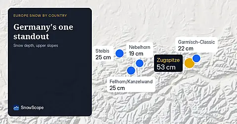

Where is the best snow in Bavaria and the Black Forest? Fellhorn/Kanzelwand, 44 cm on the upper slopes (20 November)
On Friday 20 November, Fellhorn/Kanzelwand holds the deepest snow in Bavaria and the Black Forest at 44 cm on its upper slopes. The region's eight white resorts show a clear split: the high Alpine peaks have solid bases, while lower areas still struggle with thin cover.
See the live snow forecast for Fellhorn/Kanzelwand in the SnowScope appSnow depth, powder alerts and the 3D map, free.
Which height matters most right now
Snow depth in early season depends heavily on altitude. The peaks above 2,000 m—Zugspitze at 2,627 m, Nebelhorn and Oberstdorf both at 2,213 m—each hold 34 to 43 cm. Below 1,600 m, Brauneck sits at just 3 cm. The difference is not luck; it is temperature. Higher ground stays cold enough to keep snow; lower slopes lose it to thaw and rain mix.
Fellhorn/Kanzelwand reaches 1,965 m with 44 cm, making it the best option if you want depth without the drive time to the highest peaks. The lift system puts you above the thaw line quickly.
| Resort | Snow depth | New snow, 72 h | Coming, next days | Top |
|---|---|---|---|---|
| Fellhorn/Kanzelwand | 44 cm | 35 cm | 31 cm | 1,965 m |
| Zugspitze | 43 cm | 16 cm | 24 cm | 2,627 m |
| Nebelhorn | 41 cm | 29 cm | 28 cm | 2,213 m |
| Oberstdorf | 34 cm | 35 cm | 30 cm | 2,213 m |
| Garmisch-Classic | 29 cm | 14 cm | 18 cm | 2,047 m |
| Spitzingsee | 8 cm | 4 cm | 10 cm | 1,569 m |

Fresh snow: who got it, who didn't
In the 72 hours to 20 November, three resorts caught substantial new snow. Oberstdorf and Fellhorn/Kanzelwand each received 35 cm; Nebelhorn took 29 cm. Zugspitze, despite its height, got only 16 cm—it sits in a rain-shadow pocket. Garmisch-Classic saw 14 cm, also cut off from the main snow band.
This fresh layer matters. It has buried rocks and filled hollows on the pistes. Early-season skiers know that 30 cm of new snow can turn a scratchy day into a smooth one. That window is now open at the top three resorts.
The forecast edge: Thursday to Sunday
By 23 November, three days of snow are forecast to arrive. Fellhorn/Kanzelwand is due 31 cm more, Oberstdorf 30 cm, and Nebelhorn 28 cm. This is enough to refresh the pistes and add insurance against thin patches. The lower resorts will receive less—10 cm or fewer—so the depth gap will widen.
The timing favours Thursday or Friday skiers. Fresh corduroy after a snow event is rare in November; plan your trip around this window if you can.
Touring and off-piste: read the bulletin first
A fresh 35 cm layer on the upper slopes is attractive to powder skiers. The snow is soft and grippy, especially on steep terrain above 1,800 m. But early-season snow is thin and sits on old, sometimes icy bases. Weak layers are common.
Off-piste and touring demands the avalanche bulletin, a transceiver, shovel and probe. Check the official warning before you leave the piste. Many of these resorts sit in gullies where sloughs and small slides are possible after heavy fresh snow.
The lower resorts: when they work
Spitzingsee, Sudelfeld and Brauneck have only 3 to 8 cm. They are not ready for a dedicated ski trip this week. However, they are useful as wet-weather alternatives if rain is forecast in the high mountains, or as a quick local run if you live in Munich or Stuttgart.
By late November or early December, if the cold holds and more snow arrives, they will improve. For now, they are waiting.
Pack for early season
Bring winter tyres or chains for the last kilometres to any of these resorts. Mountain roads freeze at night, even when the village is wet. Wax your skis before you go—early snow is often hard and abrasive, and new wax makes a real difference to your edge and glide.
Bring layers. November weather swings fast: a 20-kilometre drive up the valley can drop the temperature by 10 degrees, and a cloud passing overhead changes everything.
Tips for skiers
- Aim for Fellhorn/Kanzelwand or Nebelhorn if you want height and depth without a long drive from northern Europe. Both have 41 to 44 cm and lifts to nearly 2,200 m.
- If you are chasing fresh snow, go on Thursday or Friday after the forecast arrives. Groomed pistes will be softest then.
- Winter tyres are compulsory on the mountain roads this week. Check road conditions before you leave on Saturday mornings.
- Off-piste only after you have read the avalanche bulletin and carry full safety kit. Early-season avalanche risk is real.
- Wax your skis the night before. Early snow is hard and rough; fresh wax saves your edges and your legs.
About these numbers
Resort snow depths are the deepest snow on the resort's upper slopes on the date shown; they are estimates for an area, not a measurement at one point. Forecasts can change. Always read the official avalanche bulletin before going off-piste.
Cite this report
For research, teaching or the press: the numbers and charts are free to reuse under CC BY 4.0 with this citation.
SnowScope (2026), Where is the best snow in Bavaria and the Black Forest? Fellhorn/Kanzelwand, 44 cm on the upper slopes (20 November), https://snowscope.app/blog/en/2026/11/schneehoehen-bayern-schwarzwald-20-november-2026.html, accessed 2026-11-20
SnowScope (Atlas Labs). (2026, November 20). Where is the best snow in Bavaria and the Black Forest? Fellhorn/Kanzelwand, 44 cm on the upper slopes (20 November). SnowScope snow reports. https://snowscope.app/blog/en/2026/11/schneehoehen-bayern-schwarzwald-20-november-2026.html
BibTeX
@misc{snowscope2026schneehoehenbayernschwar,
author = {{SnowScope (Atlas Labs)}},
title = {Where is the best snow in Bavaria and the Black Forest? Fellhorn/Kanzelwand, 44 cm on the upper slopes (20 November)},
year = {2026},
month = nov,
howpublished = {\url{https://snowscope.app/blog/en/2026/11/schneehoehen-bayern-schwarzwald-20-november-2026.html}},
note = {Published 2026-11-21 12:23 UTC; accessed 2026-11-20}
}· CC BY 4.0 · Methods, data and tools →
Fellhorn/Kanzelwand: snow and temperature by height, this winter vs last (tools) →
Follow Fellhorn/Kanzelwand
Free: a message when fresh snow is coming, and the forecast every morning.
More snow reports

Only Zugspitze and upper Fellhorn reliably hold 30 cm by mid-December. Lower Bavarian hills offer cheaper tickets but much lower snow odds. Data from 13 November 2026.

Zugspitze leads German resorts with 53 cm on 19 November. Snow cover is growing; 38 cm possible in the next week.

The snow is shrinking in Germany: 840 km² gone since last week. Snow cover, new snow, resorts and the days ahead in Germany on 17 November.